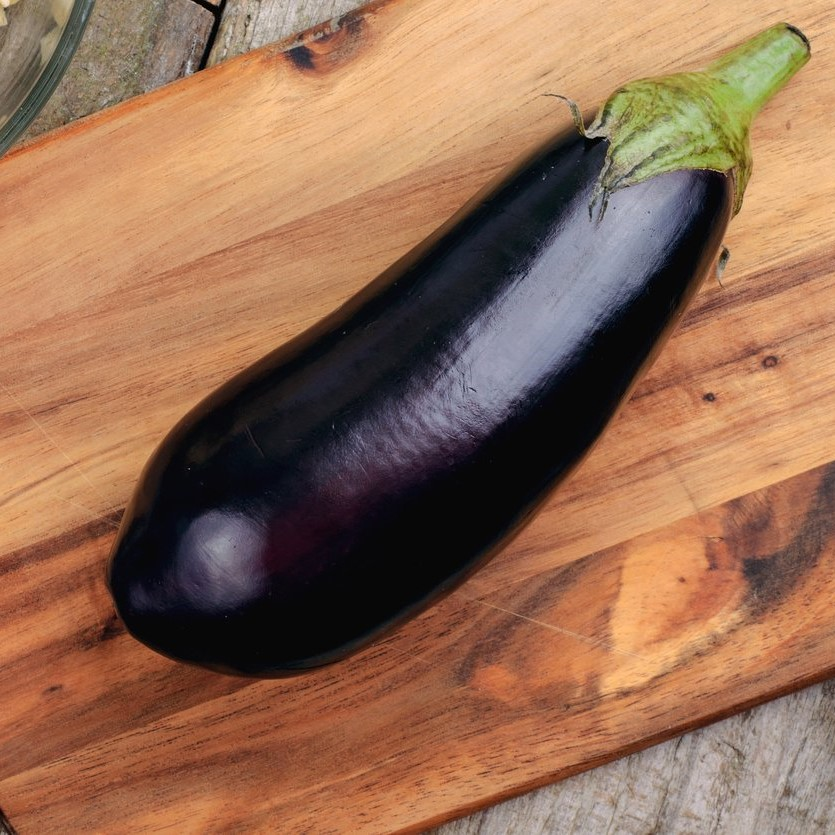
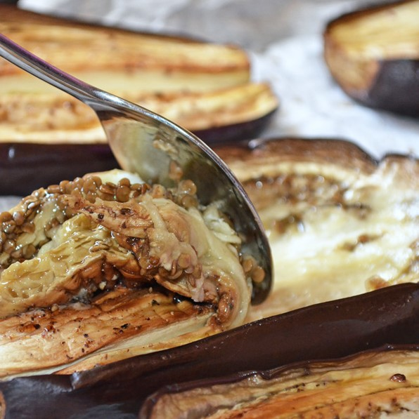
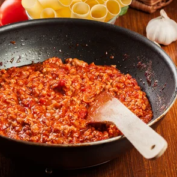

🍆Berenjenas Rellenas🍆

Preparación: Antes de empezar a cocinar siempre vamos a necesitar
tener listos nuestros utensilios e ingredientes. En nuestro caso:
🆠Berenjenas.
🆠Carne picada y/o pimiento verde y pimiento rojo.
🆠Queso cheddar, manchego y parmesano.
🆠Tomate frito, cebolla y ajo.
Preparamos las verduras dejandolas en remojo mientras sacamos la carne de la nevera
y vamos rallando los tres quesos en un bol.

Empezamos a cocinar: Primeramente cortamos las berenjenas verticalmente por la mitad
y con una cuchara vaciamos el interior de nuestras berenjenas. No tiraremos la parte retirada.
Cogemos los pimientos y con un cuchillo cortamos la parte superior (donde las semillas), y
cortamos el pimiento a tiras y luego esas tiras las cortamos en taquitos, lo retiramos en un bol.
Luego cortamos la cebolla en finas tiras y cortamos también un diente de ajo.

Encendemos el fuego: Ponemos un chorrito de aceite de oliva en la sartén. Dejamos caer la cebolla y el ajo,
y esperaremos a que adopten un color dorado, cuando eso ocurra añadiremos los pimientos y la parte anteriormente retirada de las berenjenas que habremos previamente troceado, para saltearlo todo junto.
Luego añadiremos la carne picada al salteado y taparemos la sartén para que reduzca por 5min a fuego medio-bajo. Levantaremos la tapa y añadiremos
el tomate frito mientras removemos para que todo absorba y se envuelva en el sabor del tomate frito. Lo dejaremos asà por 15min a fuego medio.

Paso final: Servimos la mezcla de la sartén dentro de las berenjenas, luego aplicamos una generosa capa de nuestros
quesos rallados e introducimos las berenjenas al horno a 150ºC por 50min.
Cuando saquemos las berenjenas y las emplatamos con una ramita de perejil y un chorrito
de tomate frito o aceite de oliva al gusto.
y solo queda... DISFRUTARRR!!!